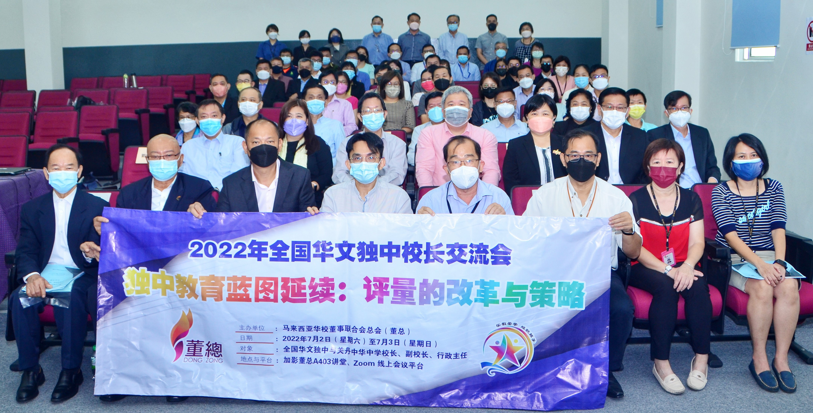

2022年全国华文独中校长交流会
探讨评量的改革与策略
2022年全国华文独中校长交流会大合照。
董总于2018年8月公布了《马来西亚华文独中教育蓝图》。为建构独中教改的具体落实过程和回馈机制，促进校长的意见交流和办学经验分享，本会原定于2020年召开华文独中校长交流会，因新冠疫情影响，于2022年7月2至3日改为实体和线上混合模式举办。本次交流会获得61所学校，共215位校长、副校长和行政主管、董总中委和董教总华文独中工委会委员等报名出席，其中实体占45人，线上参与则有170人。
配合此交流会主题——“独中教育蓝图延续：评量的改革与策略”，董教总华文独中工委会教育委员会副主任、统一课程委员会主任张喜崇博士，以及统一考试委员会主任郭荣錦博士，在会上分别发表了“独中生学习成果总体规划初探”和“独中体系教育评量的探索”的研究报告，让与会者了解评量改革的重要性。
本次交流会也举行了一场校长论坛，主题为：“不一样的教育：疫情后的教育改变”，分享人为吉隆坡中华独中张梅莲校长、吉兰丹中华独中林敏萍校长和山打根育源独中冯国超校长，谈谈他们对教育改革的看法，以及学校在疫情后所面对的挑战和解决之道。
与此同时，大会亦拟出三项议题，让数所独中校长和副校长分享他们的宝贵经验，以供各校从中借鉴和参考，包括：
| 议题 | 分享者 |
|---|---|
| 一、学校的形成性评量 | 吴维城校长（槟城锺灵独中） 许梅韵副校长（巴生兴华中学） |
| 二、学校选修课的课程设置 | 黄慧珠校长（宽柔中学古来分校） 陈志强校长（双溪大年新民独中） 罗洪贤校长（吉隆坡循人中学） |
| 三、学生学习历程：多元学习的体验 | 黄雪莱校长（马六甲培风中学） 庄织华校长（江沙崇华独中） |
陈大锦：集思广益 提高华文独中教育质量
董总主席陈大锦致词时谈到，近几年为有效推动独中教育改革，董总均希望能够搜集学校的意见与声音，加强紧密合作，携手落实各大改革项目。2017年董总推动草拟《马来西亚华文独中教育蓝图》，因此，该届交流会即聚焦在《咨询稿》的讨论上。尔后，于2018年完成和公布《马来西亚华文独中教育蓝图》，同年也举办了一场“全国华文独中校长论坛”，主要目的是向校长汇报《独中教育蓝图》的重点发展策略与行动方案。至于本次交流会的主题将围绕“独中教育蓝图的延续：评量的改革与策略”，让学生无论在学习或评量的方式都可达到全面的改革发展。
陈大锦表示，只有通过坦诚的交流，集思广益，才能为华文教育所面对的种种问题，找到解决方案，进一步提高华文独中的教育质量。虽然学生已经回到学校上实体课，一切似乎回归正常，但据联合国教科文组织的评估，对于欧洲和北美的国家来说，可能需要4到10年才能让学生赶上疫情期间因停课而导致的学习损失。那么，回观我国的学生究竟需要多少年来弥补这样的损失，独中的学生又该如何面对疫情后的教育巨变，这都是值得深入探讨的课题。
庄俊隆：《独中课程总纲》今年内定版
另外，董教总华文独中工委会教育主任庄俊隆也指出，在课程改革方面，董总于2020年公布了《马来西亚华文独立中学课程总纲（试行版）》，今年将会作最后修订，正式定版。课程局也在《课程总纲》的指引下，对初中14科和高中28科的课程标准进行修订，初中课程标准预计2024年完成，而高中课程标准则预计2025年陆续完成。
庄俊隆指出，在统考改革方面，董总面临极大的挑战。由于在新冠疫情的肆虐下，统考考期、监考和评阅人员的安排等等，受到诸多干扰，致使考试局工作量大增。即便如此，董总基于不怕慢、只怕站的精神，仍努力推动两项重大改革，包括：一、三语口试；二、理科实验评量。目前，考试局已顺利于6月11日举办了高中三语口试线上研讨交流会，并针对三语口试架构进行全面与深入的讨论。而理科实验评量，则在今年3至4月间，挑选了9所学校试行相关的实验评量，明年将会扩大试行学校的数量，希望届时有更多学校参与本项试行计划；与此同时，在统考考题的设置上，考试局也逐步减少传统试题，并增加素养导向试题。
庄俊隆也提及，为了能更有效地解答学校行政管理层关于《华文独中教育蓝图》相关教育改革的疑问，以及促进交流，董总于今年架设了“董总资讯传播平台”。平台首阶段的使用对象为全国华文独中和关丹中华中学校长，他吁请全国独中校长踊跃注册，以便藉由校长们的建议与交流，让董总能更深入和有效地探讨逐步落实《华文独中教育蓝图》。